Breaking Bias
Breaking Bias was an app commissioned by Ball State University to provide information educating students on bias incidents and hate crimes. The app is meant give students a way to reach out for help after experiencing or witnessing an incident, increasing bystander intervention, and making campus safer for Ball State students. Ball State Daily News here. Ball State has more information on the app here.
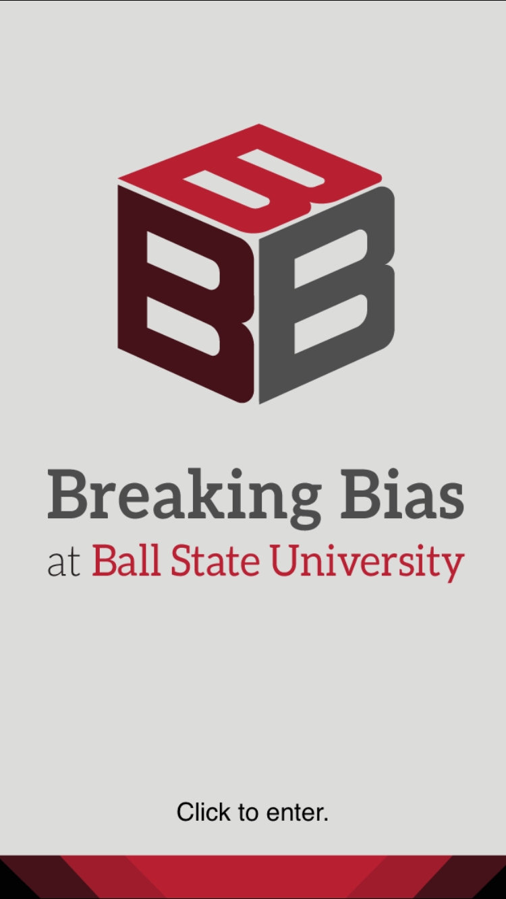 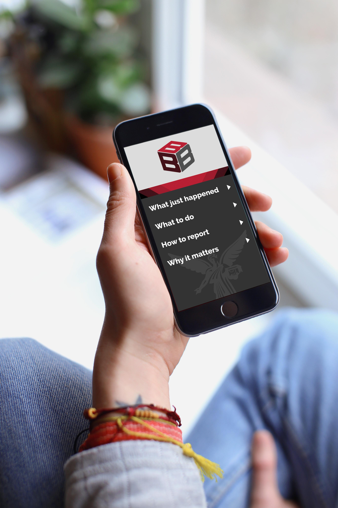 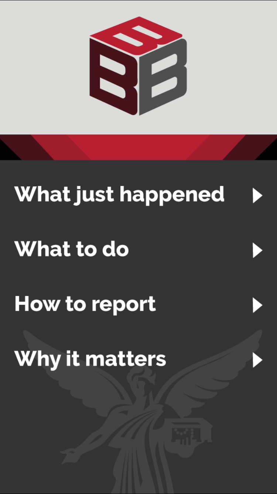
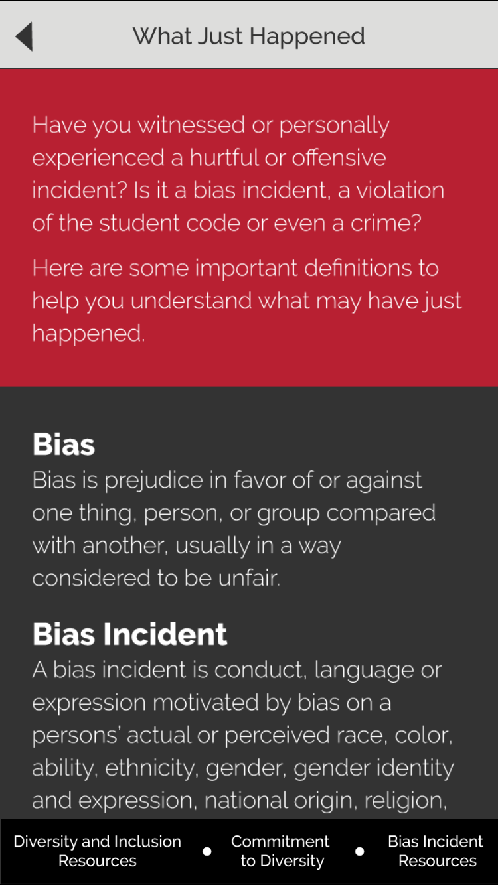
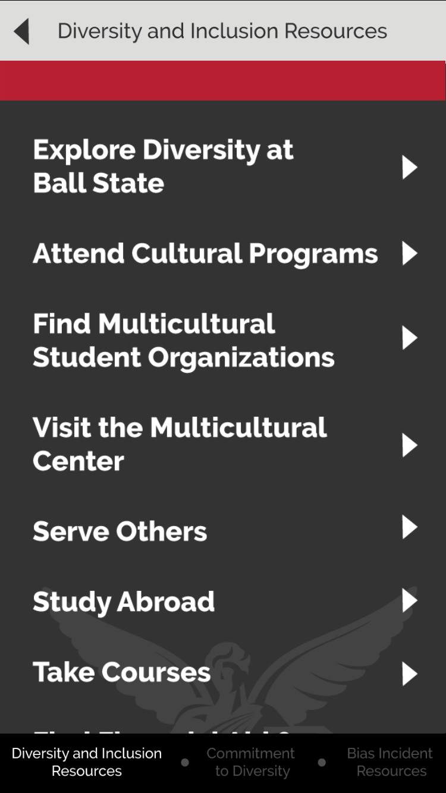
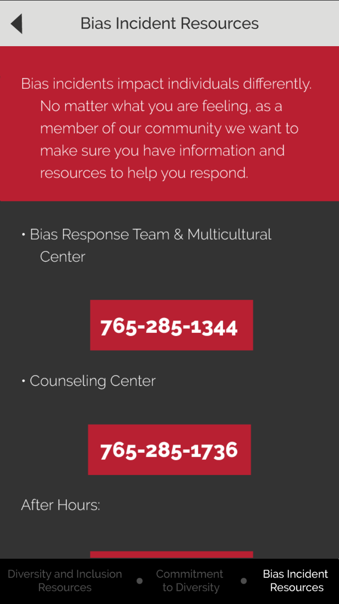
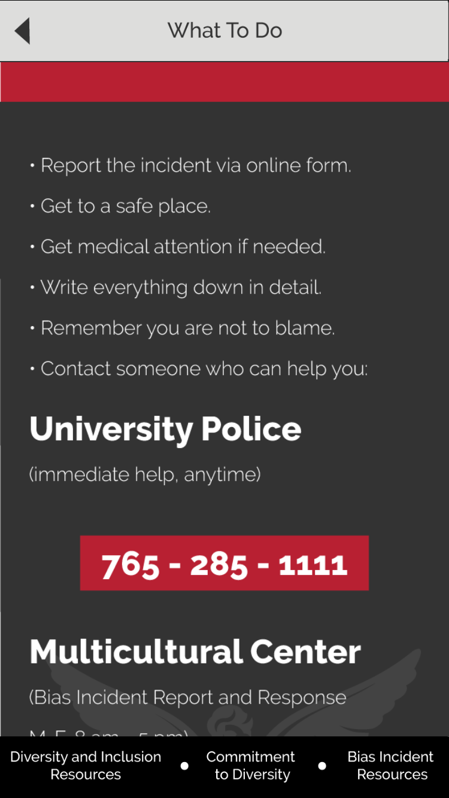
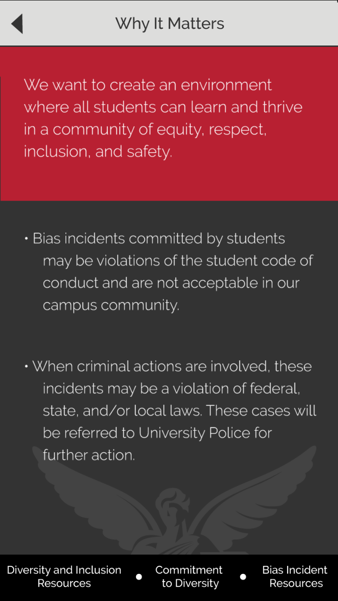
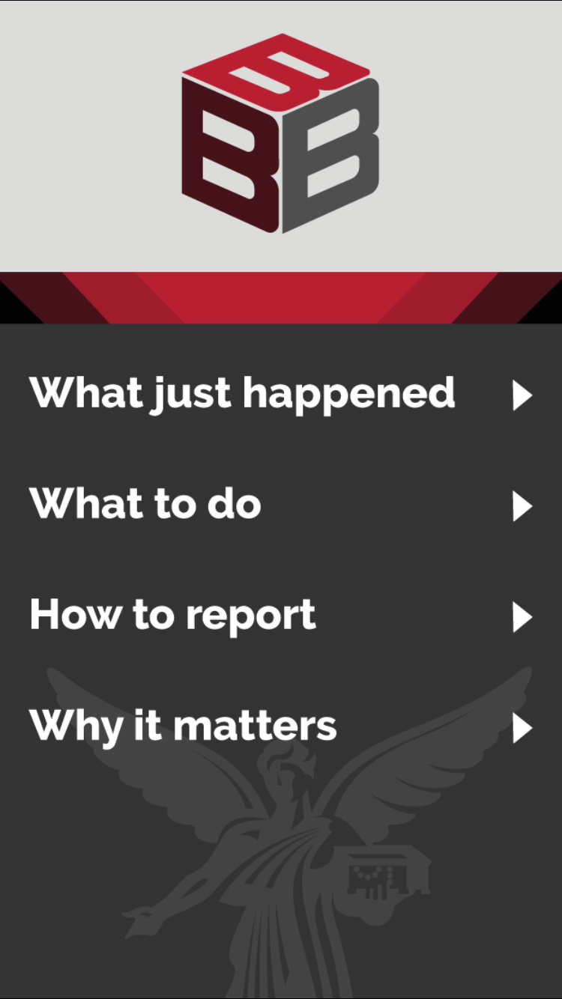
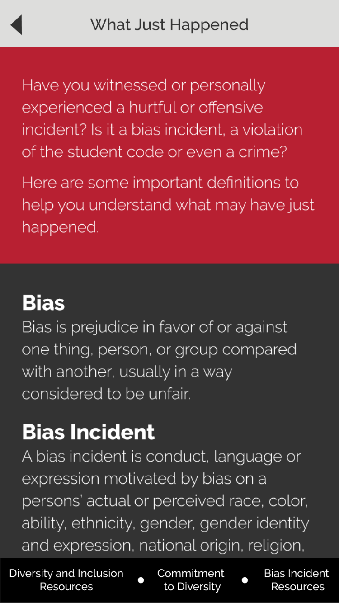
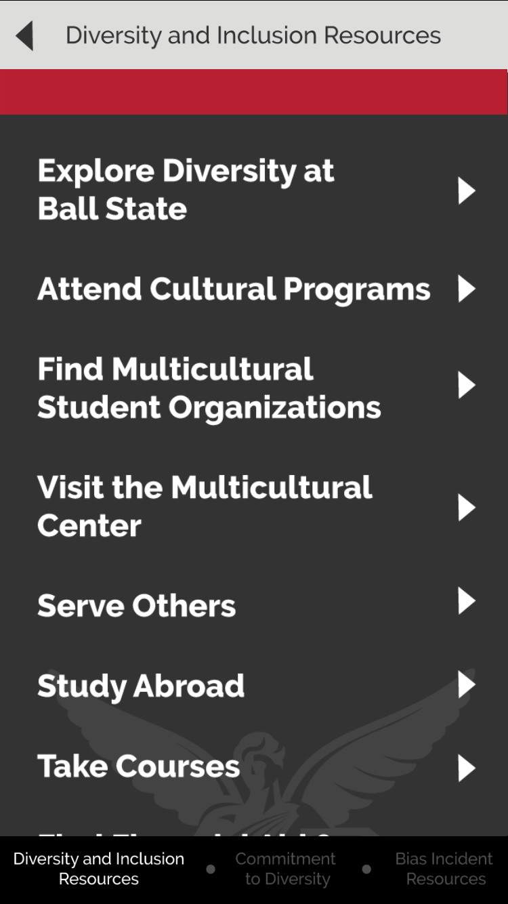
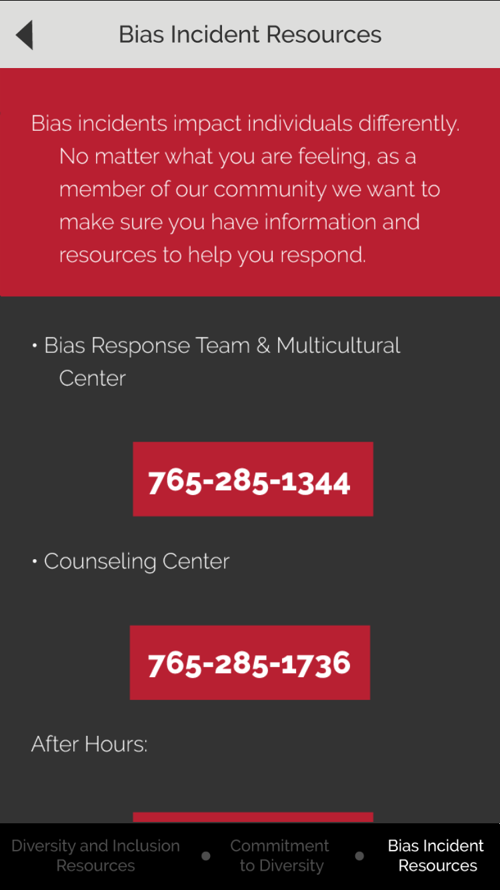
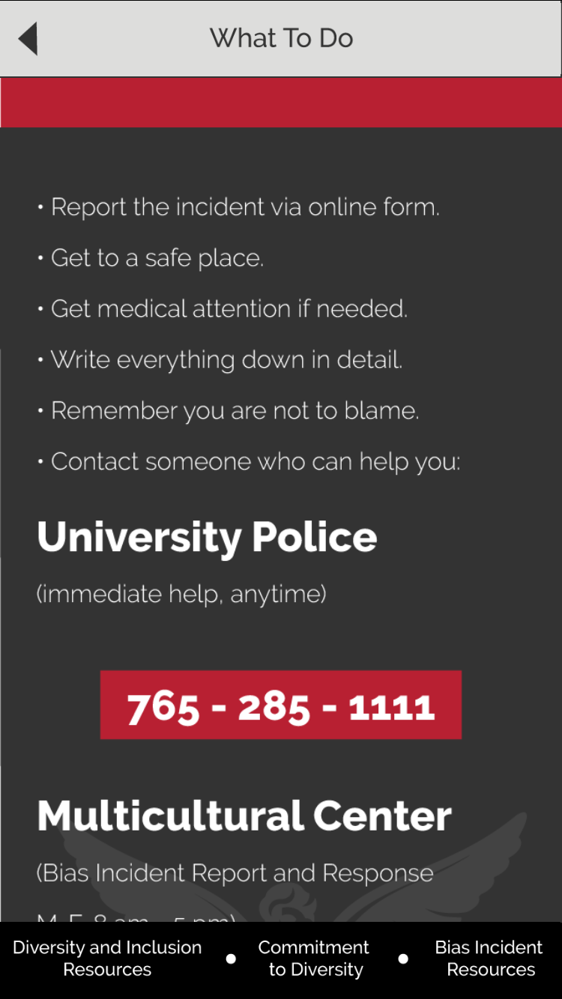
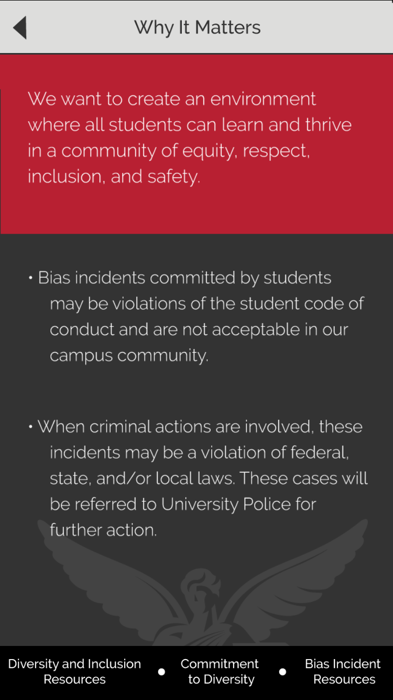